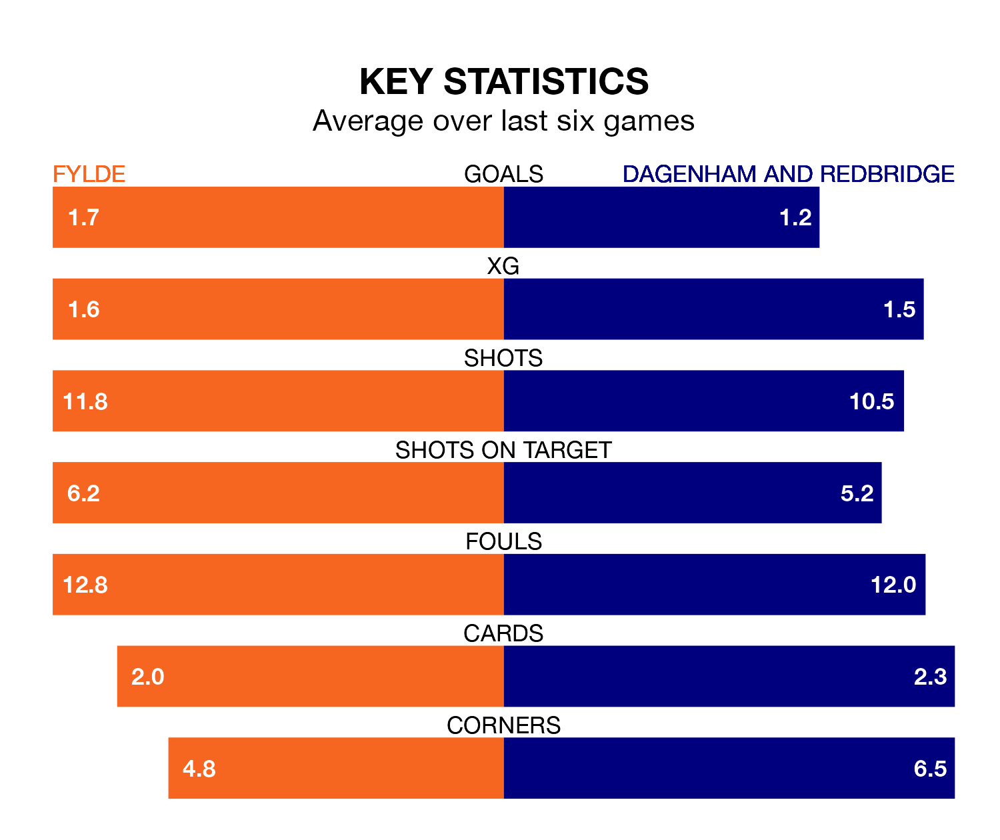

Fylde face Dagenham and Redbridge at the Mill Farm Stadium on Saturday looking to secure a first win in six National League games.
The Coasters have lost three and drawn two matches since they last earned three points – against Gateshead on October 28.
They face a Dagenham & Redbridge side who have won just two and lost three over that time.
Fylde are bottom of the table after 23 games, of which they have won four and drawn six, earning 18 points.
Dagenham & Redbridge are six places ahead of the Coasters in 18th, with seven wins and four draws putting them on 25 points.
With 24 goals in 23 games so far this season, the visitors are the league's second-lowest scorers with 1.0 goals per game. But they are conceding fewer than average too, letting in 31 goals at a rate of 1.3 per game.
The home team, meanwhile, are average scorers, with 1.5 goals per game. They have conceded 2.0 goals per game.
In the last five years, Fylde and Dagenham & Redbridge have played each other on four occasions. Fylde won two of them, Dagenham & Redbridge one, and they drew once.
On average, the Coasters scored 1.8 goals and Dagenham & Redbridge 1.2 in those matches.
Their last meeting was on September 2, when Dagenham & Redbridge won 3-1 at home.
Fylde's last match was on December 16, a 2-1 loss against Altrincham, with Connor Ellis Barrett getting the goal for the Coasters.
Dagenham & Redbridge lost 2-0 against Wealdstone last time out, also on December 16.
Updated: 12:43, 20/12/23